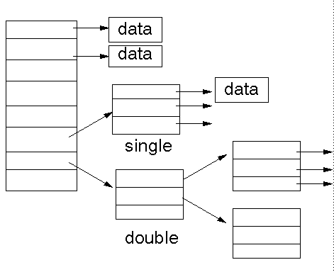

Minix v1 文件系统的实现
Contents
Minix v1 文件系统的实现#
提示
这是一篇迁移自 Jekyll 的文章，如有格式问题，可到 ⛺SilverRainZ/bullet 反馈
Minix FS#
Minix file system 是 Andrew S. Tanenbaum 在 198x 年发明的文件系统, 并随着 Minix 1.0 版一起于 1987 年释出, Linus 编写 Linux 0.11时, 使用的也是 Minix FS, Linux 至今依然提供了对 Minix FS 的支持. Minix FS 结构简单, 易于理解, 并且资料相当丰富.
xv 6#
其实最开始并没有用 Minix FS 的想法, 在实现 Minix FS 之前, 我先看了 xv6 中的文件系统部分, 在抄了一遍它的代码之后, 才发现原来 xv6 实现的不是现有的任何一个文件系统, 虽然在原理上和 Minix 没有太大差别 (甚至某些方面比 Minix 更好, 比如 xv6 的 FS 有日志), 但是因为这不是一个被广泛使用的文件系统, 使得你在构建一个磁盘的时候得自己写代码… (xv6/mkfs.c), 而且你没法很方便地验证你代码的正确性, 太麻烦, 弃之.
Minix 则不同了, 作为曾经流行过的文件系统, 在 Linux 上至今都有方便的 mkfs.minix 和 fsck.minix 工具, 前者可以建立一个 Minix 文件系统, 后者检查该文件系统的正确性. 正因如此, 我在 xv6 的代码的基础上修改了代码, 在 OS67 上实现了一个精简版的 Minix FS.
建立磁盘#
首先用bximage建立一个硬盘镜像文件, 再用mkfs.minix建立文件系统,
如果需要复制文件进去的话, 用mount挂载.
bximage bin/rootfs.img -hd=10M -imgmode=flat -mode=create -q
mkfs.minix bin/rootfs.img -1 -n14
sudo mount -o loop -t minix bin/rootfs.img /mnt/fs
sudo cp -r usr/* /mnt/fs/
sleep 1
sudo umount /mnt/fs
这段脚本建立了一个大小为 10 M 的 Minix 文件系统镜像, 并且将 usr 目录下的文件复制进去.
当你需要检查文件系统的正确性, 执行fsck.minix -fsl ./bin/rootfs.img,
检查无误的话, fsck 会输出该磁盘的超级块信息及里面包含的所有文件.
若出错, fsck 会给出详尽的错误信息, 比如下面这段:
➜ OS67 git:(master) ✗ fsck.minix -fsl ./bin/rootfs.img
Forcing filesystem check on ./bin/rootfs.img.
3360 inodes
10080 blocks
Firstdatazone=110 (110)
Zonesize=1024
Maxsize=268966912
Filesystem state=1
namelen=14
/bin:
/bin/README
/README
Inode 6 marked unused, but used for file '/TESTME'
/TESTME
Block 115 in file '/TESTME' is marked not in use.
Inode 5 not used, marked used in the bitmap.
Inode 6 used, marked unused in the bitmap.
Zone 114: marked in use, no file uses it.
Zone 115: not in use, counted=1
Minix 文件系统结构#
Minix 文件系统的结构如下:
Minix v1 file system structure
zone: 0 1 2 2 + imap_blk ... ...
+----------------------------------------------------------------------------------------+
| bootsector | superblock | inode bitmap ... | zone bitmap ... | inodes zone | data zone |
+----------------------------------------------------------------------------------------+
1 zone = 2 block = 1024 byte
注意: Minix 文件系统的最小分配单位是 zone, 可以把它叫做虚拟块, 一个虚拟块的大小是 1024 byte, 而磁盘的物理扇区大小常常是 512 byte.
i 节点#
i 节点是 Minix FS 中最重要的结构体, 其定义如下:
// OS67/inc/minix.h
/* in-disk minix inode */
struct d_inode{
uint16_t mode; // 文件类型和 RWX 访问控制位
uint16_t uid; // 文件属主的用户 ID (unused)
uint32_t size; // 文件大小, 以 byte 计数
uint32_t mtime; // 自从 1970.1.1 以来的秒数 (unused)
uint8_t gid; // 文件属主 所属的组 (unused)
uint8_t nlinks; // 该节点被多少个目录所链接
/*
* zone[0] - zone[6] 分别指向 7 个直接块
* zone[7] 指向间接块
* zone[8] 指向双重间接块 (unused)
*/
uint16_t zone[9];
};
// (标记有 unused 是 OS67 没有用到的元素)
i 节点被储存在磁盘的 i 节点块(inodes zone)中, 并按排列顺序被编号, 其使用状况存储在磁盘的 i 节点位图块(inodes bitmap)中.
一个 i 节点对应磁盘里的一个文件, 储存着文件的元信息. 值得注意的是 i 节点并未储存该文件的文件名.
zone中储存了虚拟块的号码, 这些号码指向磁盘的数据块(data zone),
这些块中直接或间接储存了文件的数据.
目录被实现为一种特殊的文件, 目录的数据由一个或多个dir_entry结构组成.
// OS67/inc/minix.h
/* minix directroy entry */
struct dir_entry{
uint16_t ino;
char name[NAME_LEN];
};
第一个元素代表该目录下的文件的 i 节点号, 第二个元素则是文件名. 文件的文件名储存在引用它的目录文件中, 这使得一个文件可以有多个名字.
在 Linux 下创建某个文件的硬连接, 其实就是为目标目录增加对指定文件对应的 i 节点的引用, 注意 i 节点号只在一个磁盘中唯一, 所以硬链接无法跨磁盘.
nlinks元素指示了有多少个目录引用了这个文件, 当删除一个文件时, 对应的 i 节点的引用数就会减一, 当引用数为 0 时, 该节点就可以从磁盘上被释放了.zone[0] - zone[6]指向的虚拟块直接储存了文件的数据.zone[7]指向的虚拟块储存的是更多的虚拟块号码, 就是一个二级表.zone[8]指向一个双重间接块.
用图说话比较清晰:
ref: http://jan.newmarch.name/OS/l6_1.html
因此, Minix FS 支持的最大文件大小为 (7 + 1024/2 + 1024/2*1024/2) * 1024 byte = 256 MB.
OS67 并没有使用双重间接块, 因此支持的最大文件大小仅为 (7 + 1024/2) * 1024 byte = 519 KB.
引导扇区(boot secotr):#
磁盘的第一个虚拟块作是引导扇区, 这个通常和文件系统没有关系.
OS67 的 bootsector 实现在 OS67/boot/bootsect.asm
超级块(super block)#
超级块(superblock), 用来存放整个文件系统的元信息, 比如磁盘大小, i节点数目, 虚拟块数目, Magic nubmer 等. Minix FS 的超级块结构如下:
// OS67/inc/minix.h
struct super_block{
uint16_t ninodes; // number of inodes
uint16_t nzones; // number of zones
uint16_t imap_blk; // i 节点位图 占用块的数目
uint16_t zmap_blk; // 数据块位图 占用的块的数目
uint16_t fst_data_zone; // 第一个 数据块 的块号
uint16_t log_zone_size; // 一个虚拟块的大小 = 1024 << log_zone_size
uint32_t max_size; // 能存放的最大文件大小(以 byte 计数)
uint16_t magic; // magic number
uint16_t state; //
};
位图(inode & zone bitmap)#
有关位图的实现在OS67/fs/bitmap.c中.
OS67/inc/minix.h实现了两个宏来定位这些位图块.
/* bit per block */
#define BPB (BSIZE*8)
/* bitmap contain inode i*/
#define IMAP_BLK(sb, i) (2 + (i - 1)/BPB)
/* bitmap contain block z */
#define ZMAP_BLK(sb, b) (2 + sb.imap_blk + (b)/BPB)
inode bitmap: i 节点位图, 这些块每个位都对应一个 i 节点, i 节点位图占据
superblock.imap_blk个块. (注意 i 节点从 1 开始计数), 宏IMP_BLK用来根据 i 节点号定位到对应的 bit 所在的块;zone bitmap: 数据块位图, 从编号为
superblock.fst_data_zone开始的块的使用情况 和这个位图上的位一一对应. (块号依然从 0 开始计数)宏ZMAP_BLOCK根据块号 定位到对应的 bit 所在的块;
虽然现在 bitmap.c 的代码工作正常, 不过我对他们的对应关系还是存有疑问… 暂时懒得去想了, 此处存疑. // TODO
i 节点块(inode)#
这些块用来储存 i 节点, 用宏IBLK根据 i 节点号, 定位到块号, 同样注意 i 节点从 1 开始计数.
#define IBLK(sb, i) (2 + ((sb).imap_blk) + ((sb).zmap_blk) + ((i) - 1)/IPB)
数据块(data)#
这些块被用来储存数据, 从superblock.fst_data_zone开始.
系统层次#
整个文件系统的实现被分为五个层次, 代码基本上继承自 xv6, 在摸清楚代码的意思之后, 把 xv6 文件系统代码改成 Minix FS 是很简单的事情, 甚至有些文件不需要改动…
磁盘驱动层 OS67/fs/ide.c#
这一层通过 ins outs 指令, 负责从磁盘读取扇区到高速缓冲区 buf,
并且限制在一个块只能被一个进程访问(通过 B_BUSY 锁住).
这里的 高速缓冲/块缓冲 只是把磁盘的数据读取到内存中暂存, 并且避免无意义的读取.
注意: 这里一次读取的是一个虚拟块(1024 byte), 而不是一个物理意义上的扇区(常见大小是 512 byee), 因此得把上层传来的虚拟块号, 转化为物理扇区号, 并且一次读取两个扇区.
uint32_t phy_blkn = b->blkno*(BSIZE/PHY_BSIZE);
...
/* number of sectors, read 2 sector for once */
outb(IDE_PORT_SECT_COUNT, BSIZE/PHY_BSIZE);
块缓冲层 OS67/fs/bcache.c#
维护了一个高速缓冲的链表(数组), 为上层提供了bread和bwrite函数,
而bget则用来分配缓冲区.
braed#
当请求一个块的数据的时候(bread), 如果一个块已经被缓存, 并且这个块的内容是有效的(B_VAILD),
块缓存层可以直接返回当前缓冲区的内容, 而不用重新读取扇区.
bread bwrite 封装了磁盘读写的操作, 你不会知道你这次读取的内容是从磁盘中读取的还是从块缓冲直接取出的, 但是数据一定是正确的.
bget#
当根据虚拟块的块号(buf->blkno)请求一个缓冲区的时候(bget),
程序会沿着链表从头到尾寻找这个缓冲区是否被缓存,是的话直接返回, 如果没有被缓存,
会从链表从尾到头搜索第一个可用的空缓冲区, 每次释放缓冲区的时候(brelse),
都会把该缓冲区放在链表头, 保证每次从头查找到的是使用时间离现在最近的缓冲区,
而被分配的空缓冲是最久没使用的.
以上的两个层次都和叫做块缓冲区的结构: buf密切相关, buf的结构如下:
// OS67/inc/buf.h
struct buf {
char flags; // B_BUSY B_VALID B_DIRTY
char dev; // only one disk, dev = 0
uint32_t blkno; // zone number
struct buf *prev; // LRU Cache List 双向
struct buf *next;
struct buf *qnext; // 磁盘操作请求队列, 单向
char data[BSIZE];
};
i 节点层 OS67/fs/inode.c OS67/fs/bitmap.c#
这一层开始和文件系统密切相关, i 节点层为使用中的磁盘中的 i 节点(d_inode)
提供了内存中的拷贝(inode), 可以类比块缓冲和虚拟块的关系.
磁盘中的 i 节点结构上面已经讲过了, 内存中的 i 节点inode结构如下:
// OS67/inc/minix.h
/* in-memorty inode */
struct inode{
uint16_t dev; // i 节点所在的磁盘, OS67 只支持单个磁盘, 所以始终为 0
uint32_t ino; // i 节点号码
uint16_t ref; // 内存引用计数
uint16_t flags; // flag 就是 flag
uint16_t atime; // (unused)
uint16_t ctime; // (unused)
// struct d_inode {
uint16_t mode;
uint16_t uid; // (unused)
uint32_t size;
uint32_t mtime; // (unused)
uint8_t gid; // (unused)
uint8_t nlinks;
uint16_t zone[9];
//}
// 可以看到后面部分其实是完整的一个`d_inode`.
};
这一层提供了对 inode 的各种操作
申请和分配:#
_ialloc_ifree在磁盘上分配和释放新的d_inode;ballocbfree在磁盘上分配和释放新的数据块, 供 i 节点使用.
以上的函数均在OS67/fs/bitmap.c中实现.
ialloc则是对_ialloc的封装, 分配一个新的d_inode后,
把它和内存中的 inode联系起来.
i 节点操作:#
iget从 i 节点缓冲中获得指定 i 节点号码的缓冲区, 类似bget;ilock将 i 节点锁住(I_BUSY), 并从磁盘中将 i 节点内容读出, 而iunlock解锁 i 节点;idup增加该 i 节点的引用计数(ip->ref),iput则将引用计数减 1, 当引用计数为 0 时, 该缓冲区被释放; 如果该节点在磁盘上的引用(ip->nlinks)也为 0, 调用itrunc将该节点占有的数据块和元信息释放, 再调用_ifree清空 inode 位图上的位;bmap读取指定 i 节点的第 n 个块, 间接块和非间接块的区别就由该函数处理;iread和iwrite则在bmap的基础上实现了对 i 节点的读取和写入.
目录层 OS67/fs/dir.c OS/fs/p2i.c#
这一层开始有文件名和路径的出现, 为上层提供了一个将路径名转换为 对应 i 节点的函数.
dir_lookup在一个类型为目录的 i 节点中寻找指定名字的dir_entry(判断 i 节点是否为目录用宏IS_DIR);dir_link为一个目录文件增加一个dir_entry, 链接到指定的一个 i 节点;p2i(path to inode) 解析路径名, 返回指定的未上锁的 i 节点.
文件和系统调用#
这一层是最上一层, 文件是对 i 节点的简单封装, 提供了fread fwrite fclose等函数.
此处涉及到进程的文件表, 因此这一层暂时没有抄写.
不过在前面几层的基础上, 实现这一层应该没什么问题.
参考#
评论
如果你有任何意见，请在此评论。 如果你留下了电子邮箱，我可能会通过 回复你。